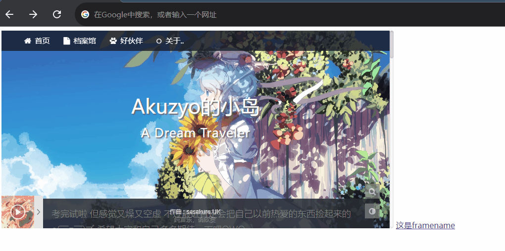
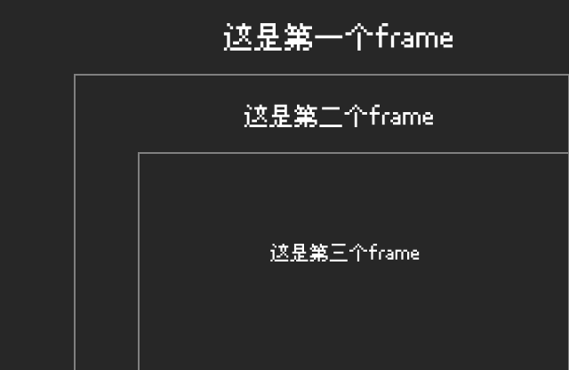
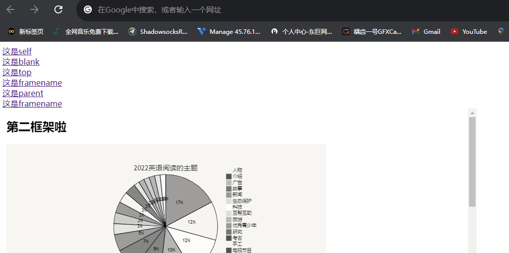

这次准备试试看到什么写什么，当然该查的还是得查的OWO
那就让我们开始吧(￣▽￣)”
当然，这也是一个自用的笔记，如有失误希望能在评论中帮我指正，这对我有很大的帮助o(￣▽￣)ブ
前面是或多或少有提过（或者用过）这个标签了(没有也得说有(* ￣︿￣))
之前用它只是用来连接网站，结果发现是超链接…
什么，你问我什么是超链接吗？嗯…PPT里就有超链接啊，难道没有玩过吗？
这个标签算是第一个接触的大多数情况得加属性的标签
那大多数情况都会有那些属性呢…大概就是以下这三种啦( •̀ ω •́ )y
herf
用法与markdown中的 [word](url) 差不多
使用起来很简单，只需要往里面塞链接就好啦
1 | <a herf="https://lhzchh.github.io/“ target="_blank">是自己的博客啦</a> |
结果就差不多是这样是自己的博客啦
当然，作为超链接，那他的表面就可以不仅是文字，图片等其他东西也可以被塞链接的，就像下面这样
1 | <a href="https://lhzchh.github.io/"><img src="https://s1.ax1x.com/2022/06/18/XOonde.png" alt="XOonde.png" border="0" /></a> |

用法差不多就是这样了（但也十分常用，在自己初学的时候根本只知道这个，完全不知道下面两个= =）
target
target属性规定了这个超链接会在哪个地方打开
有五个可以被打开的地方（听起来好怪啊喂(╯‵□′)╯︵┻━┻），其中两个是从网页角度来说的，后三个算是…在框架这个角度来说的吧
当然了，这个属性得需要有前面的herf做前提要不然都不知道该链接什么，怎么规定他从哪里打开呢？
_self
这个是默认的，也就是说如果没有写target属性的话默认就是这个选项了
意思就是在当前的页面中打开被链接的网页，说人话就是同窗口打开
多说无益，实际看到才能知道是什么意思（实际上就是自己组织不了语言让你自己体会）
<a href="https://lhzchh.github.io/" target="_self">这是self</a>
结果就是这个样子这是self（打开后记得回来哦）
_blank
设定之后就是在新的页面中打开被链接的网页，也就是你在浏览器中右击链接时会出现的“在新标签页中打开链接”
个人认为这样打开链接很舒服也很方便，但是由于好像也有一定的性能问题与安全问题，容易被钓鱼，所以有的人可能不推荐用这个标签（当然我也没有搞懂这个，感觉很复杂…）
更新一下，比较新的浏览器已经把这个修复了，但是为了以防万一，比较简单而且能用的防范方式，就是在属性里面再加一个 rel="noopener noreferrer"(据说加noreferrer是为了兼容早期的火狐浏览器，当然新版的火狐肯定是支持的）
1 | <a href="https://lhzchh.github.io/" target="_blank" rel="noopener noreferrer">这是blank</a> |
1 | <a href="https://lhzchh.github.io/" target="_blank">这是blank</a> |
结果就是这个样子这是blank（不用回来了）
那么前两个就是从”页面”的角度来分类的两个标签，一般知道这两个就差不多了。接下来就是从框架的角度来讲的后三个标签啦，当然，也有必要去简单了解以下标签是什么了
框架
简单点来说就是套娃，一个网站里面再套另一个网站
比如说这样
1 | <iframe src="https://lhzchh.github.io/" name="test1" width="100%" height="400" style="border: 0;"></iframe> |
看起来应该是这个样子
有时候一个网站里面用这个可以把一个页面分成很多个不同的网页，当然也算是套娃的一种啦
设定框架的方法有两种，当然这就不是现在该谈的了
那么，接着回到正题，去讲后面的三个属性吧
framename
因为不知道该先说什么会比较好（我想由易到难开始讲的，但是感觉哪个都不好理解，所以就先说这个相对简单的了）
framename顾名思义，就是在指定名字的框架(也就是前面写框架时的那个name=“xxx”)里面打开链接
1 | <a href="https://www.bilibili.com/" target="test1">这是framename</a> |
效果差不多是这个样子这个是framename（这里看不出来，理想效果应该是在前面的那个框架中看到粉色小电视，所以只好用gif展示了…或者在这个网站也可以看到相关的示范）

_parent
parent的话…一般来说和下面这个看不出很大的区别
但是如果是很多个框架在套娃的话，就能看出来了(但是这个就更难说了TAT)
怎么说呢…就像是下面这个样子

此时如果第三个frame里面写了这个
1 | <a href="https://www.runoob.com/" target="_parent">这个是parent</a> |
就会让第二个frame(也就是父框架，我个人更喜欢叫上一级框架)打开相对应的网站
也就是下面这个样子(我怎么感觉我现在在说玄学…)

_top
终于是最后一个啦
现在写感觉_top反而是最简单的一个，因为他的作用就是
一！键！核！平！
无论把他放在哪个框架里面，他都能产生和self一样的效果！
不要998，框架核弹带回家(?)
写法就像下面这样
1 | <a href="https://lhzchh.github.io/" target="_top">这是top</a> |
效果就是这样啦（当然这里看不出来QAQ，记得要点回来看啊啊啊）
那么，target属性就介绍到这里吧，如果有错误的话可以在评论下帮忙指出（因为这个时间跨度很长了，或多或少也有些遗忘)
id属性
等等，还有最后一个没有说(不过现在来说也没有很重要啦)
它的作用就是创建一个 HTML 文档书签，而且在网页中是不会显示的
它的作用…大概就是为了做标记吧（笑）